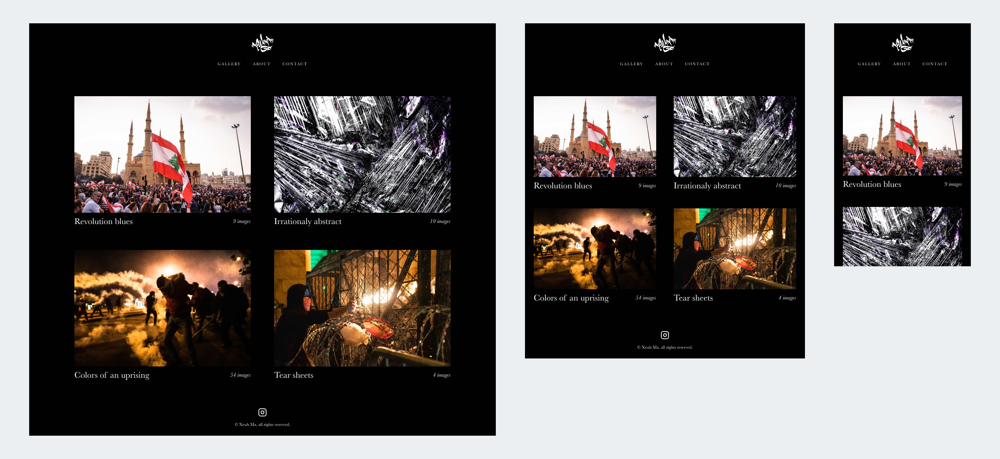

Xeuhma
UI design & web développement
Voyageur en quête de sens au milieu des siens, les humains. Xeuhma cherche à photographier pour la presse afin de comprendre et faire comprendre ce qui pousse l'humanité à agir ou à réagir. L'essence de son travail artistique est la dualité et le questionnement de la réalité. Il se considère comme quelqu'un d'émotionnellement binaire, sans nuances. Pour lui l'expression à travers l'art est une nécessité : ce n'est pas un passe-temps mais un exutoire. Ses techniques vont du collage à la photographie en passant par les médias mixtes.
Une gallerie responsive
Le prototytpage InVision a permis de tester plusieurs moteurs de recherche auprès d'utilisateurs potentiels. L’objectif était de classer les critères de recherche par ordre de priorité. Ce classement a permis de retenir les informations à intégrer dans la barre de recherche et celles à utiliser pour filtrer le résultat.

Couleurs et typographie
Un arrière-plan sombre donne de l’élégance à l’interface, attire le regard et amène l’utilisateur à se concentrer sur le contenu. Les images sont nombreuses et les textes sont courts, le fond noir améliore ici la perception de la hiérarchie visuelle. Le choix d’un gris très clair pour les textes adoucit le contraste avec le fond.